Termin er et fundamentalt konsept i regnskap og økonomi som definerer en avgrenset tidsperiode for regnskapsføring, rapportering og økonomisk oppgjør. I regnskapssammenheng refererer termin til spesifikke regnskapsperioder som brukes for å strukturere og organisere finansiell informasjon. Forstelse av terminer er essensielt for korrekt periodisering og nøyaktig årsregnskap. Terminer påvirker direkte hvordan transaksjoner klassifiseres og når de påvirker resultatregnskapet og balansen.
Seksjon 1: Grunnleggende Definisjon av Termin
1.1 Hva er en Termin i Regnskap?
En termin i regnskapssammenheng er en definert tidsperiode som brukes for å:
- Strukturere regnskapsføring og organisere finansielle transaksjoner
- Fastsette rapporteringsperioder for delårsrapporter og årsregnskap
- Beregne periodisk resultat og avskrivninger
- Planlegge og kontrollere bedriftens økonomiske aktiviteter
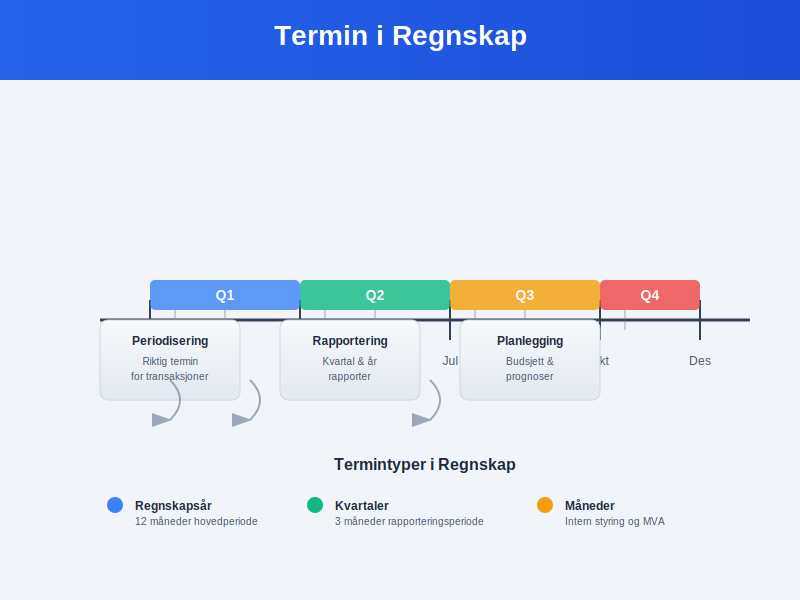
1.2 Terminens Rolle i Regnskapsprinsippene
Terminavgrensning er fundamentalt for flere regnskapsprinsipper:
Periodiseringsprinsippet:
- Inntekter føres i den terminen de er opptjent
- Kostnader føres i den terminen de er pådratt
- Sammenstilling av inntekter og tilhørende kostnader i samme termin
Forsiktighetsprinsippet:
- Konservativ terminplassering av usikre poster
- Avsetninger for fremtidige forpliktelser i riktig termin
- Nedskrivninger når verdireduksjon er sannsynlig
| Regnskapsprinsipp | Terminens betydning | Praktisk anvendelse |
|---|---|---|
| Periodisering | Riktig terminplassering | Påløpte kostnader og forhåndsbetalte utgifter |
| Forsiktighet | Konservativ timing | Tidlig kostnadsføring, sen inntektsføring |
| Sammenlignbarhet | Konsistente perioder | Samme terminlengde år over år |
Seksjon 2: Typer Terminer i Regnskapsføring
2.1 Regnskapsår og Hovedterminer
Regnskapsåret er den primære terminen for finansiell rapportering:
Standard regnskapsår:
- Kalenderår: 1. januar - 31. desember (mest vanlig)
- Avvikende regnskapsår: Kan velges av strategiske grunner
- Første regnskapsår: Kan være kortere eller lengre enn 12 måneder
Eksempel på terminvalg:
Detaljhandel: Regnskapsår 1. februar - 31. januar
(Unngår julerush i årsavslutning)
Skolevirksomhet: Regnskapsår 1. august - 31. juli
(Følger skoleåret for bedre sammenligning)
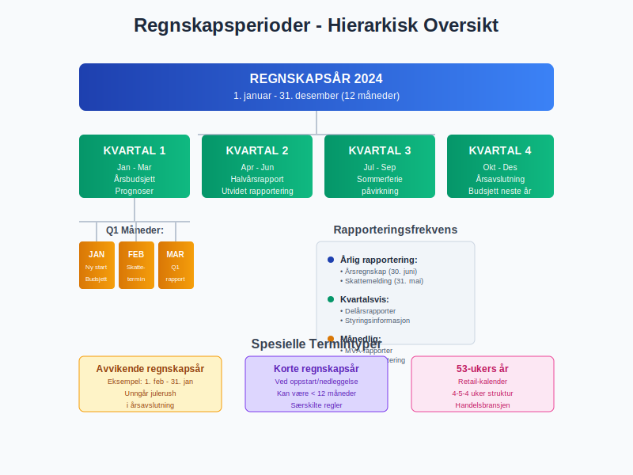
2.2 Delperioder og Rapporteringsterminer
Kvartaler er de vanligste delterminene:
Q1-Q4 oversikt:
| Kvartal | Periode | Særlige forhold | Rapporteringskrav |
|---|---|---|---|
| Q1 | Jan-Mar | Årsbudsjett og prognoser | Kvartalsrapport |
| Q2 | Apr-Jun | Halvårsrapport | Utvidet rapportering |
| Q3 | Jul-Sep | Sommerferie-påvirkning | Standard kvartalsrapport |
| Q4 | Okt-Des | Årsavslutning og budsjett | Foreløpige årstall |
Månedlige terminer brukes for:
- Intern styring og oppfølging
- MVA-rapportering og skatteoppgjør
- Lønnsbehandling og personaladministrasjon
2.3 Spesialterminer og Bransjespesifikke Perioder
Sesongterminer for bransjer med sesongvariasjoner:
Eksempler på spesialterminer:
- Landbruk: Høst-til-høst terminer
- Turisme: Høy-/lavsesong periodisering
- Skole/utdanning: Skoleårs-baserte terminer
- Detaljhandel: Retail-kalender med 4-5-4 uker per kvartal
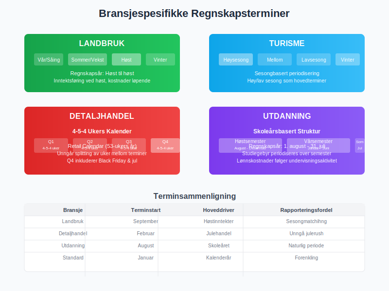
Seksjon 3: Terminbasert Regnskapsføring
3.1 Periodisering og Terminplassering
Korrekt terminplassering av transaksjoner krever:
Inntektsføring:
- Leveringsvilkår: Når risiko og kontroll overføres
- Tjenesteoppdrag: Basert på fremdriftsgrad eller ferdigstillelse
- Abonnementer: Pro rata fordeling over kontraktsperioden
Kostnadsføring:
- Direkte sammenheng: Kostnader føres når tilhørende inntekt føres
- Systematisk fordeling: Avskrivninger og amortisering
- Immediat kostnadføring: Kostnader uten fremtidig økonomisk nytte
Praktisk eksempel - abonnement:
Årlig softwarelisens betalt 1. januar: 120.000 kr
Månedlig kostnadsføring:
Debet: Programvarekostnad 10.000 kr
Kredit: Forhåndsbetalte utgifter 10.000 kr
(120.000 kr ÷ 12 måneder = 10.000 kr per måned)
3.2 Avstemming mellom Terminer
Terminskifte krever spesielle justeringer:
Årsavslutningsposteringer:
- Påløpte inntekter: Opptjent men ikke fakturert
- Påløpte kostnader: Pådratt men ikke betalt
- Forskuddsbetalinger: Innbetalt men ikke opptjent
- Forhåndsbetalte utgifter: Betalt men ikke forbrukt
| Justeringstype | Balansepåvirkning | Resultatpåvirkning |
|---|---|---|
| Påløpte inntekter | Øker fordringer | Øker inntekt |
| Påløpte kostnader | Øker gjeld | Øker kostnad |
| Forskudd fra kunder | Øker gjeld | Reduserer inntekt |
| Forhåndsbetalte utgifter | Øker eiendeler | Reduserer kostnad |
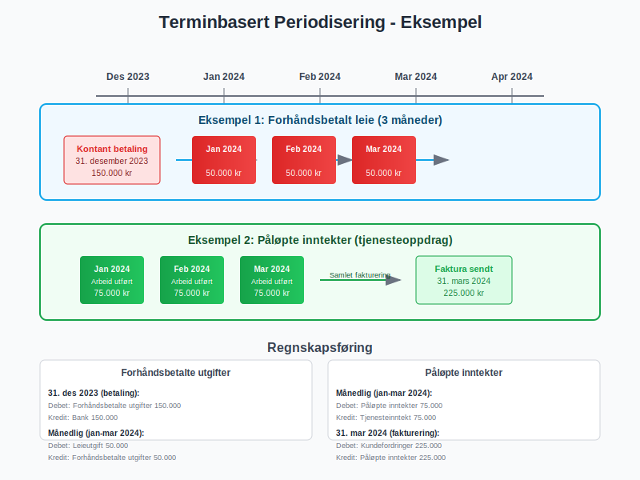
Seksjon 4: Skattemessige Terminer og Frister
4.1 Skattemessige Rapporteringsperioder
Skatt og avgifter følger strenge terminfrister:
MVA-terminer:
- Månedsrapportering: Frist 10. i påfølgende måned
- Periode-rapportering: Hver 2. måned for mindre virksomheter
- Årlig rapportering: For virksomheter under MVA-grensen
Skattemessige frister:
| Rapportering | Termin | Frist | Konsekvens ved forsinkelse |
|---|---|---|---|
| Skattemelding | Årlig | 31. mai | Forsinkelsesgebyr |
| Årsregnskap | Årlig | 30. juni | Tvangsmulkt |
| A-melding | Månedlig | 5. påfølgende måned | Overtredelsesgebyr |
4.2 Forskuddsskatt og Terminbetalinger
Forskuddsskatt beregnes på terminbasis:
Beregningsgrunnlag:
- Forrige års skatt som utgangspunkt
- Justert for forventede endringer i inntekt
- Termin-fordeling: 6 terminer per år (febr-okt)
Forskuddsskatt terminer 2024:
Termin 1: 15. februar
Termin 2: 15. april
Termin 3: 15. juni
Termin 4: 15. august
Termin 5: 15. oktober
Termin 6: 15. desember
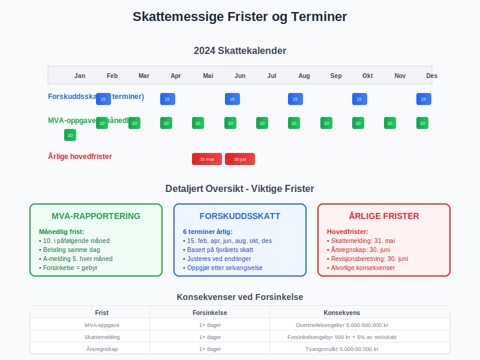
Seksjon 5: Terminkontrakter og Finansielle Instrumenter
5.1 Terminkontrakter i Regnskap
Terminkontrakter er finansielle avtaler for fremtidig levering:
Karakteristika:
- Standardiserte kontrakter handlet på børs
- Fast pris og leveringsdato
- Margin-krav og daglig oppgjør (mark-to-market)
Regnskapsmessig behandling:
- Virkelig verdi på balansedagen
- Resultatføring av verdiendringer (med mindre sikringsbokføring)
- Sikringsbokføring når kriteriene er oppfylt
Eksempel terminkontrakt:
Kjøp av 1000 tonn hvete for levering om 6 måneder
Kontraktspris: 2.500 kr/tonn
Total verdi: 2.500.000 kr
Ved kontraktsinngåelse: Ingen bokføring (off-balance)
Ved rapporteringsdato: Verdijustering basert på markedspris
Ved levering: Realisering av gevinst/tap
5.2 Valutaterminkontrakter
Valutasikring gjennom terminkontrakter:
Anvendelsesområder:
- Import/eksport: Sikring mot valutarisiko
- Utenlandske investeringer: Kurssikring av eierandeler
- Låneopptak: Sikring av utenlandsk finansiering
Regnskapsbehandling:
| Sikringstype | Effektivitetstesting | Resultatføring |
|---|---|---|
| Virkelig verdi sikring | Kreves | Både sikringsobjekt og -instrument |
| Kontantstrøm sikring | Kreves | Effektiv del i egenkapital |
| Netto investering | Kreves | Valutadel i egenkapital |
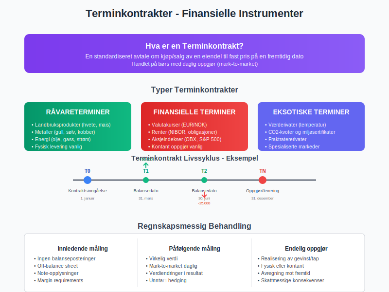
Seksjon 6: Terminplanlegging og Budsjetteriing
6.1 Strategisk Terminplanlegging
Langsiktig terminplanlegging innebærer:
Flerårig perspektiv:
- Investerigsplaner fordelt over flere terminer
- Finansieringsbeho og kapitallokering
- Markedsekspansjon og organisk vekst
- M&A-aktivitet og konsolideringer
Operasjonell terminplanlegging:
- Sesongvariasjoner og kapasitetsutnyttelse
- Arbeidskapital og likviditetsstyring
- Vedlikeholdsplaner og avskrivningspolitikk
6.2 Rullende Prognoser og Terminoppdatering
Dynamisk terminplanlegging:
Rullende prognoser:
- 12+3 modell: 12 måneder detaljert + 3 måneder ny periode
- Kvartalsvis oppdatering basert på faktiske resultater
- Scenarioanalyse for ulike markedsforhold
Prognosemodell eksempel:
Basis prognose (50% sannsynlighet):
- Omsetningsvekst: 8% årlig
- Marginutvikling: Stabil
- Investeringsnivå: 3% av omsetning
Optimistisk scenario (25% sannsynlighet):
- Omsetningsvekst: 15% årlig
- Marginutvikling: +2 prosentpoeng
- Investeringsnivå: 5% av omsetning
Pessimistisk scenario (25% sannsynlighet):
- Omsetningsvekst: 2% årlig
- Marginutvikling: -1 prosentpoeng
- Investeringsnivå: 1% av omsetning
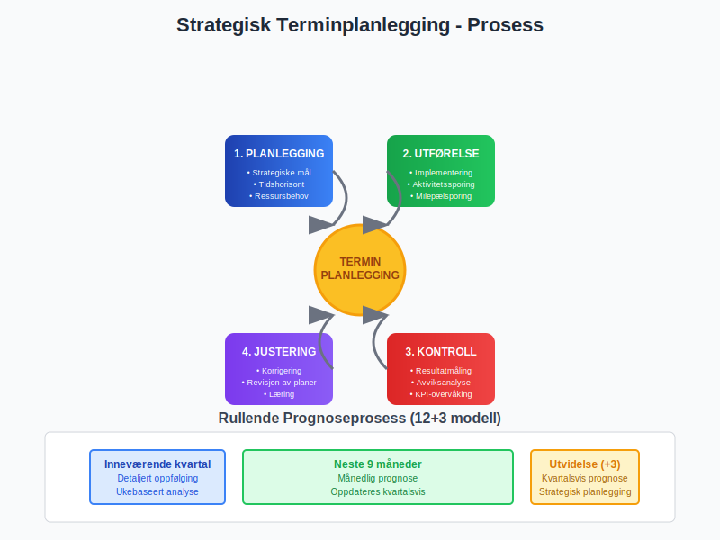
Seksjon 7: Digitale Verktøy for Terminhåndtering
7.1 ERP-systemers Terminsutstyr
Moderne ERP-systemer tilbyr omfattende terminfunksjonalitet:
Kjernefunksjoner:
- Automatisk periodeavslutning med validering
- Multi-periode rapportering og sammenligning
- Forecasting-moduler med scenariomodellering
- Konsolidering av flere enheter/terminer
Integrasjoner:
| System | Integrasjon | Termingevinster |
|---|---|---|
| CRM | Salgs-pipeline og inntektsprognose | Bedre terminestimater |
| HR | Lønnskostnader og bemanning | Nøyaktig kostnadsfordeling |
| Supply Chain | Innkjøp og lagerstyring | Optimalisert terminbestilling |
7.2 Business Intelligence og Terminanalyse
BI-verktøy gir dypere terminsinnsikt:
Analysedimensjoner:
- Year-over-year sammenligning på terminnivå
- Sesongvariasjoner og trenidentifisering
- Terminanormalisering for sammenlignbare resultater
KPI-dashboard for terminer:
- Terminens lønnsomhet og marginutvikling
- Kontantstrøm per termin og likviditetsprognoser
- Kundesegment-analyse over terminer
- Produktlønnsomhet per termin
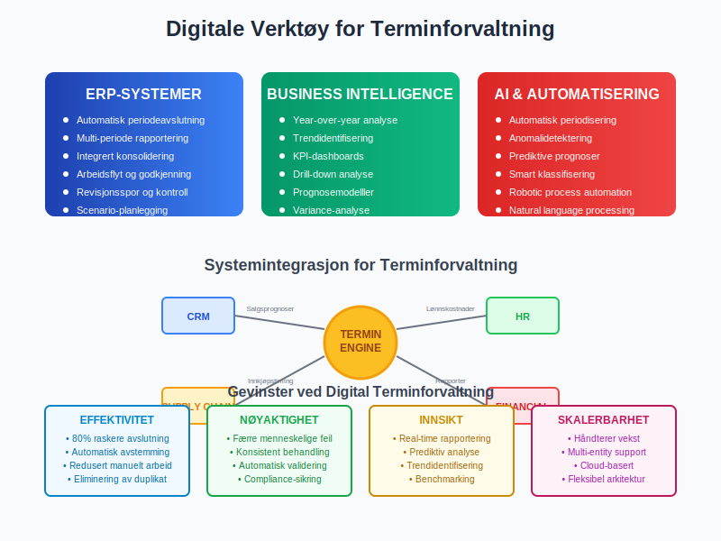
Seksjon 8: Internasjonale Terminpraksiser
8.1 IFRS og Terminprinsipper
International Financial Reporting Standards påvirker terminbehandling:
Sentrale standarder:
- IFRS 15: Inntektsføring og terminplassering
- IFRS 16: Leieavtaler og terminfordeling
- IAS 23: Låne- og rentekostnader over terminer
Konseptuelle forskjeller:
| Standard | Terminpåvirkning | Norsk praksis |
|---|---|---|
| IFRS 15 | Femtrinnsmedelll for inntekt | Mindre detaljert |
| IFRS 16 | Aktivering av leieavtaler | Operasjonelle leieavtaler |
| IAS 36 | Nedskrivningstesting | Enklere triggertester |
8.2 Konsernregnskap og Terminkonsolidering
Multinasjonale konsern møter terminutfordringer:
Konsolideringsutfordringer:
- Ulike regnskapsår i datterselskaper
- Valutaomregning og kurseffekter over terminer
- Elimineringer av intern omsetning på tvers av terminer
Harmoniseringsprosess:
- Standardisering av regnskapsår i konsernet
- Felles regnskapsprinsiper for terminbehandling
- Konsolideringsrutiner og oppgjørsfrister
- Kvalitetskontroll og validering av termindata
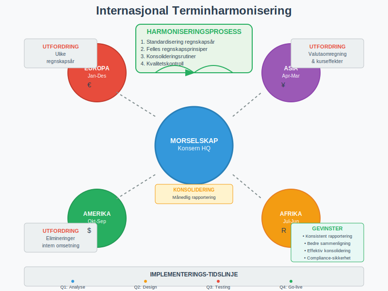
Seksjon 9: Terminenes Påvirkning på Finansiell Analyse
9.1 Terminbaserte Finansielle Nøkkeltall
Finansiell analyse baseres på terminsammenligning:
Lønnsomhetsanalyse:
- Terminens driftsresultat som % av omsetning
- EBITDA-utvikling over terminer
- Nettomargin-trender og sesongvariasjoner
Likviditetsanalyse:
- Arbeidskapital-endringer mellom terminer
- Kontantkonverteringsyclus på terminbasis
- Terminens frie kontantstrøm og investeringskapasitet
Terminanalyse eksempel:
Q4 vs Q3 Analyse:
Omsetning: +15% (sesongeffekt handel)
Bruttomargin: -2pp (høyere innkjøpskostnader)
EBITDA: +8% (positiv volum delvis motvirket av margin)
Arbeidskapital: -25% (normal sesongmessig reduksjon)
9.2 Prediktiv Terminanalyse
Fremtidig terminprestasjoner kan estimeres gjennom:
Statistiske modeller:
- Trendanalyse over historiske terminer
- Sesongdekomponering for underliggende vekst
- Regresjonsmodeller med eksterne faktorer
Leading Indicators:
- Ordrebok og pipeline-styrke
- Markedsindikatorer og bransjeutvikling
- Kompetitive posisjoner og markedsandeler
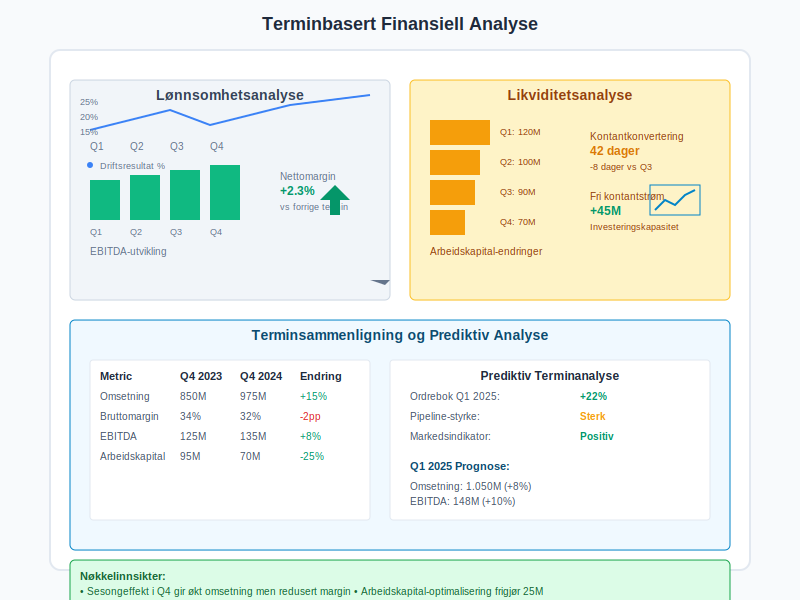
Seksjon 10: Fremtidige Trender i Terminahatantering
10.1 Real-time Regnskapsføring
Kontinuerlig regnskapsføring endrer terminbegrepet:
Teknologiske drivere:
- Cloud-baserte regnskapssystemer
- API-integrasjoner for sanntidsdata
- Kunstig intelligens for automatisk klassifisering
- Blockchain for transaksjonssporing
Utfordringer:
- Regulatoriske krav til terminrapportering
- Revisjons og kontrollprosedyrer
- Systemstabilitet og datasikkerhet
10.2 ESG og Bærekraftsterminer
Bærekraftsrapportering krever nye terminmåliginger:
ESG-dimensjoner:
- Karbonavtrykk målt på terminbasis
- Sosiale indikatorer og medarbeidertilfredshet
- Governance-metrics og compliance-score
Integrert rapportering:
| ESG-faktor | Terminmåling | Finansiell sammenheng |
|---|---|---|
| CO₂-utslipp | Månedlig måling | Karbonkostnad per enhet |
| Medarbeiderturnover | Kvartalsvis | Rekruttering- og opplæringskostnader |
| Compliance-score | Kontinuerlig | Risikojustert verdsettelse |
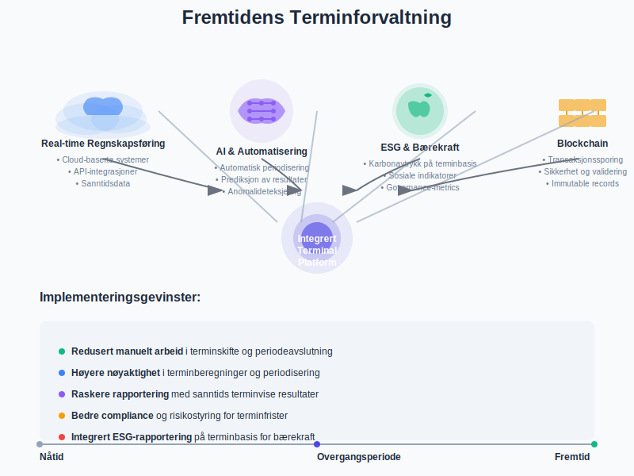
10.3 Automatisering og AI i Terminbehandling
Intelligent terminoptimalisering:
AI-anvendelser:
- Automatisk periodisering basert på kontraktstermer
- Prediksjon av terminresultater
- Anomalideteksjering i termindata
- Optimaliseringng av terminfrister og arbeidsflyt
Implementeringsgevinster:
- Redusert manuelt arbeid i terminskifte
- Høyere nøyaktighet i terminberegninger
- Raskere terminvise rapporter
- Bedre compliance og risikostyring
Seksjon 11: Praktisk Terminimplementering
11.1 Oppsett av Terminstruktur
Etablering av terminregime krever:
Planleggingsfase:
- Definisjon av hovedterminer og delperioder
- Klassifiseringssystem for ulike transaksjontyper
- Kontrollrutiner for terminskifte og avstemming
- Rapporteringsmatriks og ansvarsfordeling
Implementeringstrinn:
| Fase | Aktiviteter | Ansvarlig | Timeframe |
|---|---|---|---|
| Design | Terminstruktur og policies | CFO/Controller | 4-6 uker |
| Konfigurasjon | ERP-oppsett og testing | IT/Regnskap | 8-12 uker |
| Migrering | Historiske data og validering | Regnskap | 2-4 uker |
| Go-live | Prod-kjøring og support | Alle | 2-4 uker |
11.2 Best Practices for Terminhåndtering
Anbefalte prosedyrer:
Terminskifte-rutiner:
- Forhåndsdefinerte avslutningsprosedyrer
- Kvalitetskontroll og fire-øyne-prinsipp
- Dokumentasjon av justeringer og antagelser
- Tidsfrister og milepælsrapportering
Kontinuerlig forbedring:
- Post-implementation review etter hver termin
- Benchmarking mot bransjepraksis
- Prosessoptimalisering og automatiseringsgevinster
- Kompetanseutvikling og opplæringsprogrammer
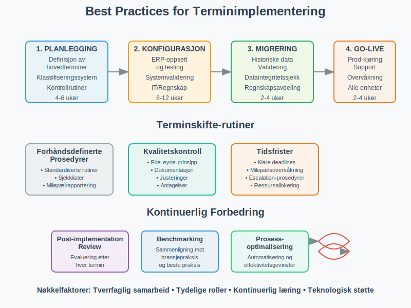
11.3 Terminrisiko og Mitigering
Risikofaktorer i terminhåndtering:
Operasjonelle risikier:
- Manuelle feil i periodisering og omkalkering
- Systemfeil og dataintegritetsutfordringer
- Tidspress ved terminskifte
- Kompetansegap og personavhengighet
Compliance-risikier:
- Regelverk-brudd og rapporteringsfeil
- Revisjons-bemerkninger og korrigeringskrav
- Skattemessige konsekvenser av feil terminplassering
Mitigeringsstrategier:
| Risikokategori | Mitigering | Ansvarlig |
|---|---|---|
| Operasjonell | Automatisering og kontroller | IT/Prosess |
| Compliance | Regelmessig oppdatering og review | Legal/Compliance |
| Kompetanse | Training og cross-training | HR/Management |
Konklusjon
Termin er et fundamentalt konsept som strukturerer hele regnskapsføringen og den finansielle rapporteringen. Fra grunnleggende periodisering til komplekse finansielle instrumenter, påvirker terminbehandling alle aspekter av bedriftens økonomi og regnskapsføring.
Nøkkelinnsikter:
- Strukturell betydning: Terminer gir rammeverket for all finansiell måling og rapportering
- Compliance-kritisk: Korrekt terminbehandling er essensielt for regelverk-overholdelse
- Beslutningsstøtte: Terminanalyse gir innsikt i trender og forretningsutvikling
- Strategisk verktøy: Terminplanlegging muliggjør proaktiv forretningsstyring
Praktisk anvendelse:
For regnskapsførere, controllere og økonomiansvarlige er mestring av terminkoncepter essensielt for:
- Nøyaktig periodisering av inntekter og kostnader
- Effektiv terminskifte og månedsavslutning
- Robust planlegging og budsjettering
- Kvalitets finansiell rapportering og analyse
Fremtidsperspektiv:
Digitaliseringen transformerer terminhåndtering med sanntids-regnskapsføring, AI-dreven automatisering og integrert ESG-rapportering. Bedrifter som investerer i moderne terminforvaltningssystemer og bygger robust kompetanse innen periodisering, vil være best posisjonert for fremtidens regnskaps- og rapporteringskrav.
Terminmesteing er ikke bare en teknisk regnskapsferdighet - det er et strategisk verktøy for verdiskapning gjennom bedre økonomisk planlegging, tidsriktig beslutningsfatting og optimalisert ressursallokering. Ved å integrere terminperspektivet i alle forretningsmessige beslutninger kan bedrifter oppnå både operasjonell eksellens og langsiktig konkurransefortinn.